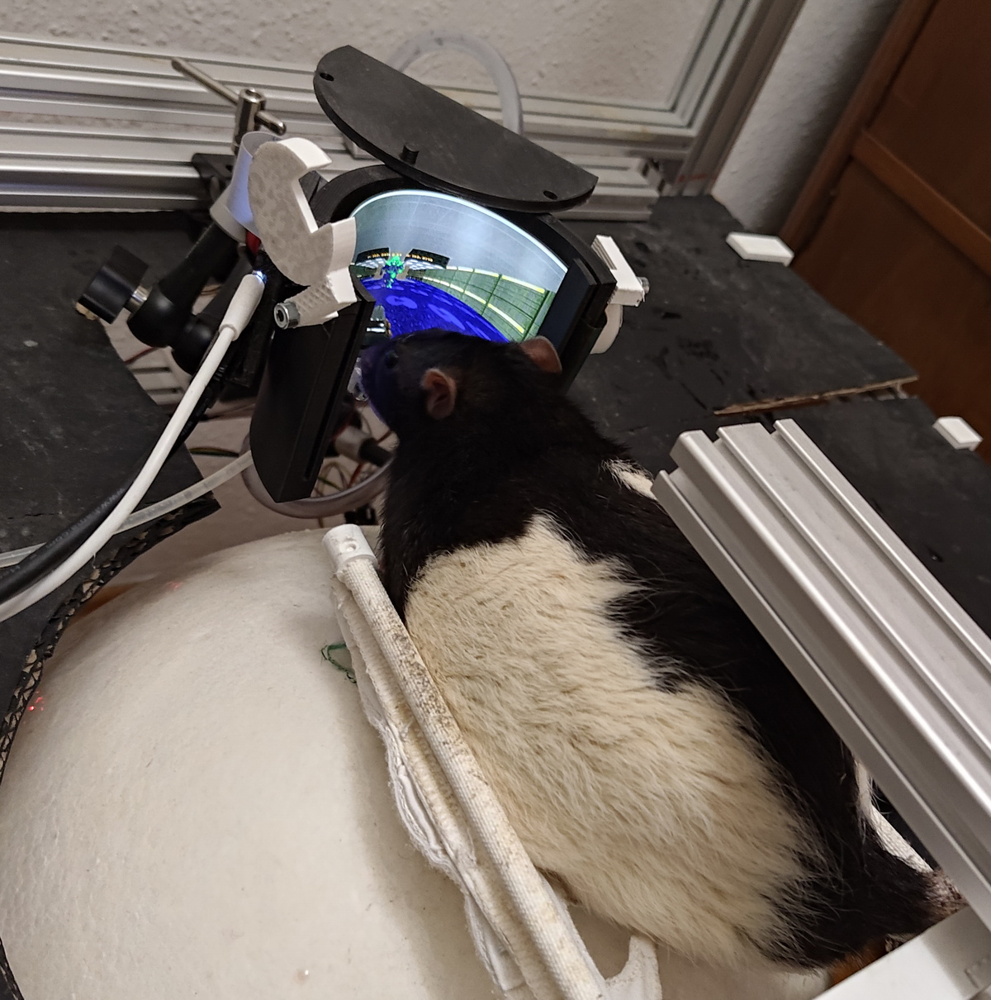
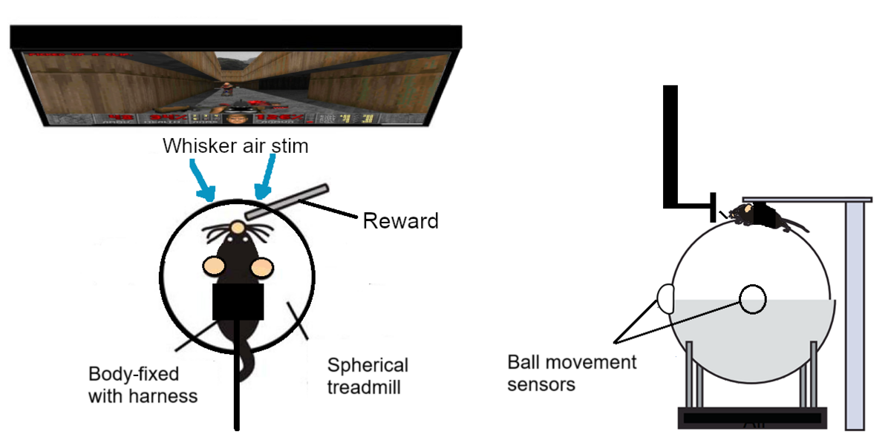
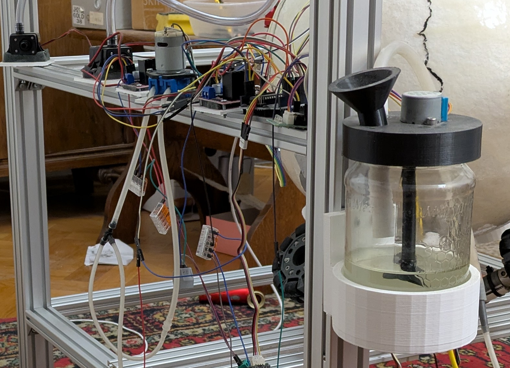
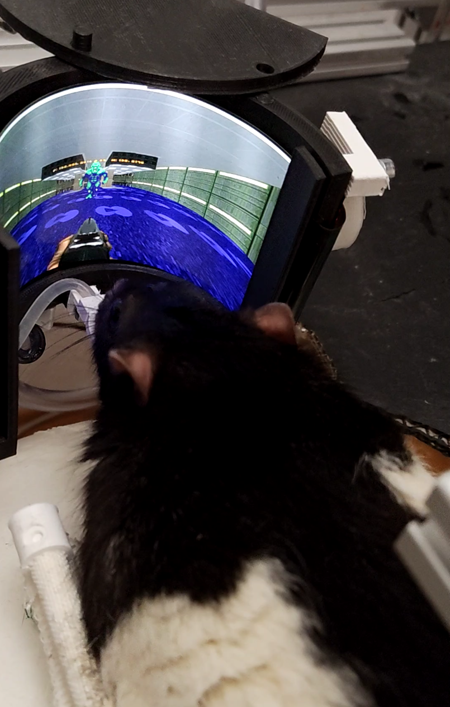

We built a complete VR setup from scratch to let rats play DOOM. The system includes a motion-tracked treadmill ball, a panoramic headset, an input trigger, and a reward circuit. All hardware and software components are open sourced, including 3D-printable designs, circuit diagrams, firmware, and control software.
The first version (v1) was built in New York by Viktor, who trained rats to walk through a corridor in DOOM using a simpler rig. That version was featured on Vice and PC Gamer. After moving back home, the project was paused. Public interest reignited development, leading to v2, a more advanced and modular version built in collaboration with electrical engineer Sándor Makra. Akos Blaschek later assisted significantly in documenting the project for open-sourcing, aiming to enable others to replicate and build upon this work. Key metallic components were designed and sourced in collaboration with SZURWIN KFT.
Foldable AMOLED screen with 180° horizontal and 80° vertical FOV, Full HD resolution
Upgraded sensors for movement tracking
Reinforced feeder system with mixing motor
Modular 3D-printable components
Improved electronics reliability and safety
Rat VR Setup Version 2Full setup from side showing rat on ball, screen around, trigger, and water tube.
Limitations
We reached the point of rat habituation but didn’t start training. Our rats (Todd, Kojima, Gabe) aged out before full testing. The setup works, but behavioral validation is pending.
Hardware
The hardware is a comprehensive VR rig designed for rodents. It consists of a motion-tracked sphere that captures the rat's movements, a custom-built trigger for in-game actions, a curved panoramic screen for visual immersion, and an automated reward system that dispenses sugar water to reinforce behavior. All these components are mounted on a modular aluminum frame, creating a complete, self-contained environment for the rat to interact with the game.
The headset wraps around the rat’s head with a foldable AMOLED screen. It maximizes immersion without obstructing whisker space. The screen supports Full HD resolution.
The headset frame also integrates several sensory components: two small air nozzles are positioned near the left and right whiskers, capable of delivering targeted air puffs on command (e.g., signaling wall collisions in-game). The frame provides a secure mounting point for the reward system's dispenser tube, placing it near the rat's mouth. Additionally, the design includes placeholders for miniature speakers near each ear, intended for future implementation of stereo audio cues.
Movement is captured via a free-spinning ball under the rat. Rotary sensors track displacement and convert it into game motion. The ball can also be driven by motors.
These motors are used during training to roll the ball and simulate movement paths before a reward. This guides the rat on where to go, helping form movement-action associations. Like the trigger, this allows for programmatic training sequences with minimal initial input from the animal.
Ball mount showing driven/undriven modes and sensor placement.
3D Model: Stand/Ball
Trigger Input
The shooting input is a custom-built hand-operated lever. Rats pull it with their paws to fire. The lever is held in place by small springs, encased in a 3D-printed housing. It includes a rotary encoder to detect motion and a stepper motor to actuate it.
The motor allows programmatic control—pulling the lever to demonstrate shooting. This enables training by pairing visual cues with mechanical motion, reinforcing the association before the rat initiates the action on its own.
Close-up of trigger lever with encoder and motor.
3D Model: Trigger
Reward System
Positive in-game actions trigger a liquid reward: sugar water delivered through a precise dispensing mechanism. The system consists of:
Mixer: Continuously stirs the sugar solution to maintain even concentration
Pump + Pressure Sensor: Keeps the line under constant pressure
Solenoid Valve: Magnetic valve that opens to release exact 10 µL doses
Dispenser: Positioned near the mouth for easy access
This setup ensures accurate, repeatable reward delivery with minimal delay. The reward is synchronized with game events to reinforce desired behaviors.
The messy but functional reward circuit from behind.
Limitations
The current system assumes basic rat mobility and grooming behavior. Fine-tuning might be needed for rats of different sizes or temperaments. Trigger placement and reward tube flow may need calibration per subject.
Software
The setup is controlled through a modular Python system. The main entry point is arena_scenario.py, which runs the full control loop.
The system includes:
Motion capture: Reads movement from optical flow sensors mounted around the treadmill ball.
Locomotion control: Drives the ball motors to guide the rat during training.
Trigger input: Reads lever pulls, detects voluntary shooting actions.
Reward delivery: Dispenses precise 10 μL sugar water rewards via a controlled solenoid valve and maintains constant line pressure.
DOOM integration: Interfaces with a modified ViZDoom environment for real-time closed-loop behavior.
Training logic: Enforces demonstrations and delivers rewards based on game state and rat behavior.
The software runs on a PC and communicates with a Raspberry Pi via TCP sockets. The Pi handles real-time sensor reading, ball actuation, and reward control; the PC processes the sensor data, runs the game, and sends high-level commands to the Pi.
All major components—movement tracking, ball driving, trigger detection, and reward control—can be operated manually or in closed-loop mode. All control parameters (e.g., motor speeds, reward volumes) are set in Python code.
Limitations
There’s no in-built calibration suite. Users must validate sensor alignment and reward timing manually. Some microcontroller firmwares might require tuning based on hardware tolerances.
Results
The rats successfully learned to navigate the virtual environment and trigger the shooting mechanism. Habituation took approximately two weeks per rat. While advanced training wasn't completed due to time constraints, initial data showed promising engagement with the system.

Rat interacting with the VR setup.
Limitations
Full behavioral validation requires longer training periods. Cross-subject variability wasn't extensively studied. The impact of prolonged VR exposure on rat well-being needs further research.
What Now?
Interested in building your own animal VR setup? Feel free to reach out for guidance. We're also compiling a comprehensive Rat VR Build Guide.
At YoloRun.Capital, we invest in ambitious, boundary-pushing projects like this, even the beautifully impractical ones. Have a wild idea? Let's talk.